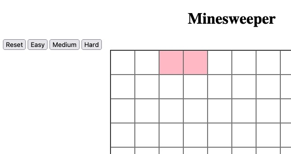

Last updated: Sun Oct 15 2023 | Permalink | RSS
Our partially done Minesweeper game with blank squares, some pink ones, and an array of buttons reading 'reset', 'easy', 'medium', and 'hard'
How to make Minesweeper part 2
This is part 2 of 3 and I recommend starting with Refactor click handler to own function
To help keep our Note: Refactoring is a specific action in which the functionality of our code stays the same, but we change the
code to (ideally) be more readable or more efficient. At the end of any refactor, nothing should be different
from the user perspective. A great candidate here is to take our callback code in the And the Note: The And now we should add one last bit of infrastructure before adding in gameplay. We want to be able to reset the
board without refreshing the whole page. Let's start that by adding a new button to the page by adding
Now let's set up the reset logic. At the top of Next we'll go down to where we select and declare the board and add
Then, just above our At the top of our And finally we will add an event listener to the Note: On looking at this again, it may make more sense to call Refresh and check to make sure the reset button does what we expect. Right now the two ways to see if it's
working is to see the squares get rearranged. If there are any green squares from clicking on the board, those
should also be cleared from the board during the reset. Let's add some actual gameplay features! The one we'll start with is getting a game over, which is not
the most fun feature, but is one that we'll need a lot going forward. We already have an
In Minesweeper, there's only two reasons why the game would be over: We don't have the ability to flag bombs yet, but the player is able to click them. What we will want to do is
check if the square that was clicked has a "bomb" class. DOM objects have a Once the game is over, we want to make the board stay put and no longer be clickable. So we can add a check to
Refresh and check and let's test a few things now. Click some smiley faces, and these should still turn
green. Click a bomb and it should "explode". Then click more smiley faces or bombs to confirm that no
click actions are happening now that the game is over. Finally click the reset button to reset the game and be
able to click in the game again. A key feature in minesweeper is to check how many bombs are next to the square you just clicked. This helps the
player know which square to click next or where a bomb might be. Each square that's not on an edge has eight
neighbors, and we can visualize how to access those neighbors by displaying their array index numbers instead of
the emojis. We do still want to keeo track of where the bombs are, so let's add the following to the CSS file: Now instead of adding emojis let's change the line in Also rather than adding the When we refresh and check we should see the squares numbered 0-99 with 20 randomly-placed pink squares. Now that we can see the numbers, we can examine how we can use those numbers to check each of the square's
neighbors. Let's look at square 12, it's neighbors are (top to bottom, left to right):
1, 2, 3, 11, 13, 21, 22, 23
In our case, the difference between each and 12 is:
-11, -10, -9, -1, +1, +9, +10, +11 Every board with 10 squared squares will follow this pattern, but for us wanting to choose any size in the
future, we can make the top and bottom neighbors relative to the Let's add a There are three steps to this function: And then of course we have to call When we refresh and check now, we should be able to click any non-pink square and be shown the number of pink
squares next to each clicked square. Our function to check neighbors is working pretty well, but if you can find a board configuration where a square
on the left edge has a pink square in the right-most square of the row above or a square on the right has a pink
square on the left-most square of the row below, you may notice that the count has too many bombs in it. From the user perspective a square on an edge only has five neighbors, and a corner square only has three. But
our array-based method has a drawback: It doesn't know where the edges are. An array has no concept of
edges. It is only a line of numbers we tricked into forming rows. So we will have to add a way to check the
edges in our Because we are asking the DOM for elements with specific IDs (the However, for square "90" its left neighbors are 79, 89, & 99, which all exist, but are all over on
the right side of the board, and for our gameplay need to not be checked. For the purposes of this tutorial and
showing the concept we will check for all the edges. This will also make our loop skip unnecessary checks and
make it more efficient, even if by a little. So let's define some edges. Top and bottom will be pretty easy since those are rows made of consecutive
numbers and we have a constant defined for how big our rows are. The top row is
Likewise we know that the bottom row indeces ( So we can add to our The right and left edges will also be kind of paired so let's look at the numbers for our 10x10 grid: The "ones" digit of each number has the same value. This looks like multiples of 10 (and 0) and numbers
that are each 1 off of multiples of 10. For multiples of any number we can check the modulo of
that number. Note: Those parens in So once these four get added we will want to change our We'll be changing Most of my trepidation with this constant is that it looks pretty intimidating at first glance, but I did give it
some whitespace here to make it a little clearer what's what. What I like about it is how it gets used in
our loop for each neighbor, because we'll be using destructuring! Instead of just Note: On second look, the Now with a refresh and check we should see accurate counts of pink squares when we click on the non-pink squares.
We should check corners and edges to make sure they work as expected. One of the more satisfying parts about playing minesweeper is clicking on an empty square with no bombs
surrounding it because it then reveals all its neighbors and if those neighbors are empty then each of
those neaighbors' neighbors are revealed and then each of THOSE
neaighbors' neighbors are revealed and so on. When we see a pattern like that it's probably
a good case for recursion! Note: Recursion can be a scary concept and in our case the recursion will be a little removed but is still there.
One thing to remember with recursion is that we want to avoid infinite loops and thus need an exit condition.
Luckily we already have one built in, and I'll explain below. Let's add the following chunk after the What does this loop do? If the count for this square is 0, loop over each of its neighbors, if we should check
them, and run Above I mentioned we have a buit in exit condition for our recursion, which is that in Refresh and check by clicking on a square with no pink squares around it so we can see all those 0s appear!
Groups of 0s should now show up like little seas with continents of bombs with shores of 1s and 2s. Eagle-eyed learners will notice that we have two nearly identical loops. stepping through neighbors and doing
something to them. The principle of DRY code
(Don't repeat yourself) tells us this loop should be its own function that gets called multiple
times to make our code easier to read, debug, and develop in the future. Let's start by writing out what code is shared in both loops: We do still want access to Where we want to "do stuff" to the neighbor, we will use a So instead of our two loops, let's replace them with: And let's break this down. First we call Like I wrote up above, refactoring means changing our code but that the functionality remains the same as before
we changed anything. So let's refresh and check and make sure that everything is still working as before.
Now that we have the ability to show empty areas of the board with our recursive checks, let's make the board
a little less noisy. Rather than showing To do this let's cut So now, we will only print the Another bit of visual overload we can remove is our When we refresh and check we should see blank squares but still be able to identify our bombs by the pink squares
they're sitting in. Now the game should be much easier to parse. Also if the black-text-on-green-squares
bother you, you can also add Next it makes sense to me to add some difficulty settings to our game. Yes, this may seem early since our player
cannot actually win yet, so why add multiple difficulties? To make testing easier too. Later when we add flags,
20 flags are a lot to place over and over. Different implementations of the game had different settings but for a board of 100, it seems to me to make sense
that "easy" have 10 bombs, "medium" have 20, and "hard" have 40. But on different
sized boards those may be way too many or too little, so let's set this up with a ratio instead. An object make sense to store these values so instead of setting Now in our loop where we populate If we refresh and check everything should work the same, except that when we hit reset, will will have too many
extra squares! This is because that loop is just pushing new values into the array and the array isn't
actually be reset to empty. We got away with this before since we were also scrambling the array with
To fix this we just have to add Okay now that we have the ability to build different difficulties, let's add a way for the player to choose
their difficulty. In the HTML (which we haven't touched in a while), lets add the following between the
reset button and the board Then back in our So now we have the buttons and a way to access them, so we'll write a simple function that takes in a string,
sets the Finally we have to call Let's do a refresh and check to make sure that our reset button still works, we can click squares and rest as
many times as we like. Then each of the difficulty buttons also reset the game and we can see they change the
number of bombs (by roughly counting the pink squares). Finish the gameplay and style the board in part 3! Add the
Please consider supporting this blog.
createBoard function from getting too cluttered, we can start refactoring out some
functionality into its own function.addEventListener to its own function. So
we will add the following above our createBoard function.const handleClick = (squareObj) => {
const clickedClass = "clicked";
if (!squareObj.classList.contains(clickedClass)) {
squareObj.classList.add(clickedClass);
}
};
addEventListener line will be:
square.addEventListener("click", () => handleClick(square));
clickedClass declaration is also likely a good candidate for a global constant or a
classes object if we find ourselves adding other classes later. Especially if we create bigger
boards, we want to be mindful of memory efficiency, and not be redeclaring the same string every loop.
Add reset feature and game over if click bomb
<button id="reset">Reset</button> between the <h1> and
board.
app.js: we'll add
let isGameOver = false; to the bottom of our constants block. We'll use this more in the next
section.
const reset = document.getElementById("reset");
handleClick function, we'll add in our reset function:const resetGame = () => {
isGameOver = false;
board.innerHTML = "";
};
createBoard function, we will call resetGame(); to ensure we clear
the board before building it again.reset DOM object just before we create the board at
the bottom.reset.addEventListener("click", createBoard);
createBoard at the bottom of the
resetGame function and have the onClick callback be resetGame instead.
This will need some rearranging but is very likely worth the work for a little clarity.

Add game over condition and bomb to click handler
isGameOver boolean, and our reset function already sets it back to false but we
haven't set it to true anywhere yet.
classList
object and we can check if a string is among those classes with the classList.contains() method. So
at the top of handleClick let's add:if (squareObj.classList.contains("bomb")) {
isGameOver = true;
squareObj.innerHTML = "💥";
}
handleClick to check if the game is over, and in that case return from the function early,
effectively stopping the click action. At the top of handleClick add
if (isGameOver) return;
Add ability to check neighbors
.bomb {
background-color: pink;
}
createBoard where we declare the
square's innerHTML to: square.innerHTML = `${i}`;i as a class; we know these will be unique to each square and would be a
good candidate to set the squares' id attributes to that i value. Under our
square.innerHTML line let's add: square.id = `${i}`;
width of the board. For example to
get 1 from an index of 12 we would say it is index - width - 1 and extrapolate our
other neighbor values from that.checkNeighbors function above the handleClick function that looks like
this and then break that down:const checkNeighbors = (squareObj) => {
const index = parseInt(squareObj.id);
const neighborIndexes = [
index - width - 1,
index - width,
index - width + 1,
index - 1,
index + 1,
index + width - 1,
index + width,
index + width + 1,
];
let count = 0;
for (let neighborId of neighborIndexes) {
const neighbor = document.getElementById(`${neighborId}`);
if (neighbor && neighbor.classList.contains("bomb")) {
count++;
}
}
squareObj.innerHTML = `${count}`;
};
count when that neighbor has a bombinnerHTML of the clicked square to be the countcheckNeighbors as part of our handleClick function.
So we'll add checkNeighbors(squareObj); within the if block where we check if the
square is not clicked.
Fix counting for squares at edges
checkNeighbors function.neighbor in the loop above) if it
doesn't exist then it will return undefined. Naturally, an undefined object
won't have a "bomb" and will not increment our count. For example, if we're on
square "94" it's nonexistent lower neighbors would be 103, 104, & 105 and would return
undefined when we try to getElementById for those values.
0, 1, 2, 3, 4, 5, 6, 7, 8, 9, so we know that they are all less than 10. But like above, we want
our boards to be variably sized and don't want to update this check every time, so we can use the
width constant. We know our square is on the top edge if index < width.
90, 91, 92, 93, 94, 95, 96, 97, 98, 99) are all within
one width of 100. We are storing 100 in the constant boardSize that we haven't
used in a while. So we know a square is in the bottom row if index >= boardSize - width.checkNeighbors function after we define our index but before we
define the neighborIndexes the following:const topEdge = index < width;
const bottomEdge = index >= boardSize - width;
Left: 0, 10, 20, 30, 40, 50, 60, 70, 80, 90
Right: 9, 19, 29, 39, 49, 59, 69, 79, 89, 99
const leftEdge = index % width === 0;
const rightEdge = (index + 1) % width === 0;
rightEdge are key if you are using Prettier for formatting because it loves
autoformatting to index + (1 % width) which will never work how you want and only lead to
frustration. But also because modulo comes before addition in the order of operations and the parens help give
you control.neighborIndexes to include our edge checks.
While I feel like this next part was pretty clever, clever solutions make me nervous:Everyone knows that debugging is twice as hard as writing a program in the first place. So if you're as clever as you can be when you write it, how will you ever debug it?
- Kernighan's leverneighborIndexes to be a 2D array (an array full of arrays), each inner array
will be a pair of values being: the edge check logic and the index of that neighbor. In this case we'll also
rename the constant to neighborEdgesAndIndexes though this likely still needs a better name.const neighborEdgesAndIndexes = [
[ !leftEdge && !topEdge , index - width - 1 ],
[ !topEdge , index - width ],
[ !rightEdge && !topEdge , index - width + 1 ],
[ !leftEdge , index - 1 ],
[ !rightEdge , index + 1 ],
[ !leftEdge && !bottomEdge , index + width - 1 ],
[ !bottomEdge , index + width ],
[ !rightEdge && !bottomEdge, index + width + 1 ],
];
neighborId,
we'll have shouldCheck and neighborId and make it very easy to skip if we should not check.for (let [shouldCheck, neighborId] of neighborEdgesAndIndexes) {
if (!shouldCheck) continue;
const neighbor = document.getElementById(`${neighborId}`);
if (neighbor && neighbor.classList.contains("bomb")) {
count++;
}
}
shouldCheck value is a bit of a double negative how we're using it.
Rather than all those !s in the arrays and the ! in the if, we could
remove all the !s and rename shouldCheck to shouldNotCheck or
shouldSkip.

Add recursive calls if square is zero
for loop where we increment the count:if (count === 0) {
for (let [shouldCheck, neighborId] of neighborEdgesAndIndexes) {
if (!shouldCheck) continue;
const neighbor = document.getElementById(`${neighborId}`);
handleClick(neighbor);
}
}
handleClick on that neighbor. handleClick will check if the neighbor has
already been clicked and if not, will run checkNeighbors on it. This is our recursive call:
checkNeighbors will call handleClick on those neighbors it's checking which will
call checkNeighbors which will call handleClick and so on until all the 0s and their
neighbors have been clicked.
handleClick,
this only calls checkNeighbors if the square hasn't been clicked. If it has been, then we end
the function there. This prevents a square checking all eight of its neighbors and then those neighbors checking
the original square that checked them causing an infinite loop.
Refactor our repeated loops into own function
for (let [shouldCheck, neighborId] of neighborEdgesAndIndexes) {
if (!shouldCheck) continue;
const neighbor = document.getElementById(`${neighborId}`);
// Some stuff we want to do to the neighbor
}
neighborEdgesAndIndexes so we should keep our new function inside
checkNeighbors and I think we should declare our new function in between where we declare
neighborEdgesAndIndexes and where we declare count:
const doForEachNeighbor = (callBack) => {
for (let [shouldCheck, neighborId] of neighborEdgesAndIndexes) {
if (!shouldCheck) continue;
const neighbor = document.getElementById(`${neighborId}`);
callBack(neighbor);
}
};
callBack function or one that
we give as an argument to our new function. And when we call doForEachNeighbor, we will have to set
a parameter that will accept neighbor as an argument in our callbacks. This is starting to sound
like recursion again, but it really is just an oddity of callback functions.doForEachNeighbor((neighborObj) => {
if (neighborObj.classList.contains("bomb")) {
count++;
}
});
if (count === 0) {
doForEachNeighbor((neighborObj) => handleClick(neighborObj));
}
doForEachNeighbor and our anonymous callback accepts a
neighborObj parameter and checks if that neighborObj contains a bomb class. If it
does, it increments the count. Once that's complete, if count is 0, we call
doForEachNeighbor again, but this time, we pass in an anonymous function that also accepts a
neighborObj parameter and calls handleClick on that neighborObj.
Show number only if count is greater than 0
0 in squares that have no bombs as neighbors, let's
only show the count if the count is greater than 0. So then these empty areas will
also be visually empty and the board will be easier to look at.squareObj.innerHTML = `${count}`; from the bottom of
checkNeighbors. We'll then change our if (count === 0) block to be:
if (count > 0) {
squareObj.innerHTML = `${count}`;
} else {
doForEachNeighbor((neighborObj) => handleClick(neighborObj));
}
count if it actually indicates a nearby bomb and otherwise just let
the squares be empty. This will cut down on visual overload to the player.index values since we only needed that to write
and debug checkNeighbors. So remove square.innerHTML = `${i}`; from the
createBoard function.
color: white; to the .clicked block in the CSS.
Add difficulty settings
bombCount as 20,
let's declare: const bombCount = {
easy: boardSize * .1,
medium: boardSize * .2,
hard: boardSize * .4
};
let difficulty = "easy";
squareValues we'll check if
i < bombCount[difficulty]. Also this loop is a little odd sitting between our constants and our
DOM elements, especially since we will want to create the array more than just on loading now. We will want to
build this array every time we reset the game, so let's add it to the end of resetGame!
shuffleValues everytime the board was created.
squareValues.length = 0; right before the loop which effectively
deletes all the elements in the squareValues array.div:<button id="easy">Easy</button>
<button id="medium">Medium</button>
<button id="hard">Hard</button>
js file, we'll add the following after we declare board and
reset:
const easy = document.getElementById("easy");
const medium = document.getElementById("medium");
const hard = document.getElementById("hard");
difficulty to that string, and immediately creates the board anew:const setDifficultyAndReset = (difficultyStr) => {
difficulty = difficultyStr;
createBoard();
};
setDifficultyAndReset whenever those buttons are clicked: so between the
reset.addEventListener and the createBoard call at the bottom of the js
file add:
easy.addEventListener("click", () => setDifficultyAndReset("easy"));
medium.addEventListener("click", () => setDifficultyAndReset("medium"));
hard.addEventListener("click", () => setDifficultyAndReset("hard"));

Finish your game!